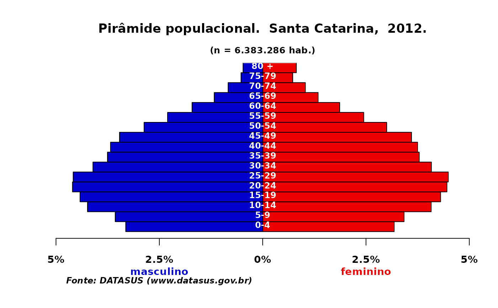
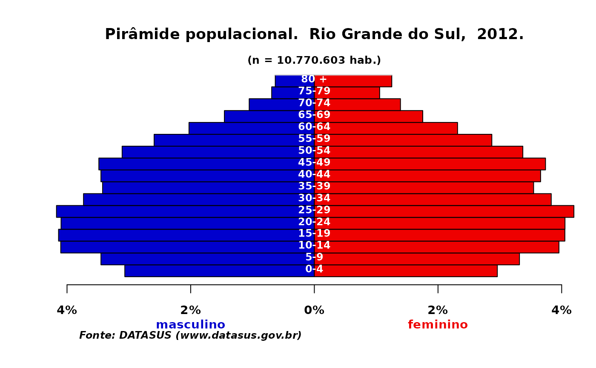
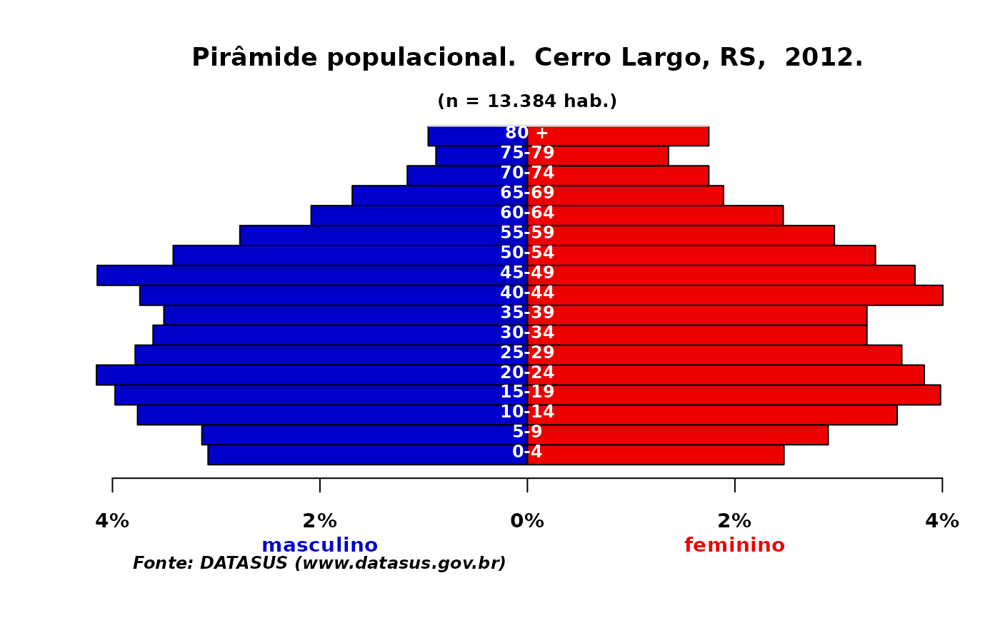

Pirâmides populacionais com os arquivos de população disponibilizados pelo DATASUS
plot_pir.RdDesenha uma pirâmide etária a partir dos arquivos de população distribuídos pelo DATASUS com censos, contagens e estimativas por sexo e faixa etária para os municípios brasileiros dos anos 1980 a 2012.
Usage
plot_pir(
pop,
tabela = FALSE,
ano = NULL,
local = "população",
title = NULL,
npop = NULL,
fontsize = 1.1,
axes = FALSE,
fonte = NULL,
x.lim = NULL,
colmasc = "mediumblue",
colfem = "red2",
colfxetar = "white",
border = par("fg"),
inside = T,
drop.unused.levels = FALSE,
...
)Arguments
- pop
Um
data framecom a estrutura dos arquivos "POPBR??.DBF" disponibilizados pelo DATASUS, ou uma tabela com o sexo nas colunas (masc, fem) e a idade em 17 faixas etárias (0-4, ... 75-79, 80+) nas linhas.- tabela
Argumento lógico. Padrão é
FALSE, deve ser mudado paraTRUEquando a população é uma tabela como indicado acima.- ano
Indicar o período de referência, para o título do gráfico. Apenas para quando a população é uma tabela, quando se usam os arquivos de população do DATASUS, a informação é capturada automaticamente.
- local
Para o título: de onde é a população representada?
- title
Título do gáfico. O padrão é
NULLe se não informado pelo usuário, é impresso no mapa o texto "Pirâmide populacional." seguido pelo resultado dos argumentoslocaleano. Para não aparecer texto algum, informetitle = ""outitle = FALSE.- npop
Nº total de habitantes, a ser digitado pelo usuário se
popfor uma tabela com a distribuição proporcional de habitantes por sexo e faixa etária. Se os valores forem a porcentagem de habitantes, o texto automático resulta em "100", já que os valores somam 100%. O padrão éNULL.- fontsize
Tamanho de fonte do título do gráfico.
- axes
Não sei se vale a pena ir como opção ou já colocar direto o padrão FALSE. **Ver melhor**
- fonte
Texto para citar a fonte ao pé do gráfico. O padrão é
NULLe se não informado pelo usuário, é impresso no mapa o texto "Fonte: DATASUS (www.datasus.gov.br)". Para não aparecer texto algum, informefonte = ""oufonte = FALSE.- x.lim
Limites do eixo x.
- colmasc
Cor para o sexo masculino.
- colfem
Cor para o sexo feminino.
- colfxetar
Cor para os rótulos da faixa etária.
- border
Cor da borda das barras.
- inside
Ver a função
barplot- drop.unused.levels
Apagar níveis não usados nos fatores?
- ...
argumentos de outras funções para personalização do gráfico.
Examples
data("POPBR12")
plot_pir(POPBR12, local = 'Brasil')
#> Input object size: 8816320 bytes; 6 variables 367290 observations
#> New object size: 8816320 bytes; 6 variables 367290 observations
#> masculino feminino
#> 0-4 7143389 6901204
#> 5-9 7758474 7474673
#> 10-14 8875967 8587202
#> 15-19 8704999 8577046
#> 20-24 8782606 8766636
#> 25-29 8610952 8795610
#> 30-34 7853458 8166586
#> 35-39 6883541 7243527
#> 40-44 6427350 6800153
#> 45-49 5785459 6240934
#> 50-54 4912910 5389329
#> 55-59 3963556 4441120
#> 60-64 3087312 3520063
#> 65-69 2256975 2654866
#> 70-74 1691406 2103802
#> 75-79 1105881 1493580
#> 80 + 1148647 1827317
plot_pir(POPBR12[substr(POPBR12$MUNIC_RES, 1,2)==42, ], local='Santa Catarina')
#> Input object size: 542816 bytes; 6 variables 19338 observations
#> New object size: 542816 bytes; 6 variables 19338 observations

#> masculino feminino
#> 0-4 211484 203141
#> 5-9 227751 218372
#> 10-14 270559 260261
#> 15-19 282061 274806
#> 20-24 293727 284584
#> 25-29 292662 286682
#> 30-34 262114 260587
#> 35-39 239691 241816
#> 40-44 234949 239257
#> 45-49 221122 229896
#> 50-54 183132 191601
#> 55-59 146876 156127
#> 60-64 109084 118969
#> 65-69 74825 85653
#> 70-74 53355 65925
#> 75-79 33424 46482
#> 80 + 30289 52022
plot_pir(POPBR12[substr(POPBR12$MUNIC_RES, 1,2)==43, ], local='Rio Grande do Sul')
#> Input object size: 917960 bytes; 6 variables 32736 observations
#> New object size: 917960 bytes; 6 variables 32736 observations

#> masculino feminino
#> 0-4 330163 318750
#> 5-9 371730 357290
#> 10-14 441770 426105
#> 15-19 445571 436395
#> 20-24 441206 436597
#> 25-29 449192 452128
#> 30-34 402105 412642
#> 35-39 368838 381933
#> 40-44 371766 394127
#> 45-49 375391 402663
#> 50-54 334838 363164
#> 55-59 279111 309171
#> 60-64 218365 249476
#> 65-69 156708 188840
#> 70-74 113490 150000
#> 75-79 74330 113777
#> 80 + 68084 134887
plot_pir(POPBR12[POPBR12$MUNIC_RES==431490, ], local='Porto Alegre, RS')
#> Input object size: 3200 bytes; 6 variables 66 observations
#> New object size: 3200 bytes; 6 variables 66 observations
#> masculino feminino
#> 0-4 40068 38969
#> 5-9 43522 41704
#> 10-14 51383 50004
#> 15-19 52034 51919
#> 20-24 58440 60121
#> 25-29 63680 67320
#> 30-34 56395 61450
#> 35-39 46721 51234
#> 40-44 42886 49936
#> 45-49 44885 55096
#> 50-54 41871 52972
#> 55-59 34913 46188
#> 60-64 26972 37664
#> 65-69 19173 28398
#> 70-74 14105 23040
#> 75-79 10050 18725
#> 80 + 10103 24773
plot_pir(POPBR12[POPBR12$MUNIC_RES==430520, ], local='Cerro Largo, RS')
#> Input object size: 3200 bytes; 6 variables 66 observations
#> New object size: 3200 bytes; 6 variables 66 observations

#> masculino feminino
#> 0-4 412 331
#> 5-9 420 388
#> 10-14 503 477
#> 15-19 532 533
#> 20-24 556 512
#> 25-29 506 483
#> 30-34 483 438
#> 35-39 469 438
#> 40-44 500 536
#> 45-49 555 500
#> 50-54 457 449
#> 55-59 371 396
#> 60-64 279 330
#> 65-69 226 253
#> 70-74 155 234
#> 75-79 118 182
#> 80 + 128 234